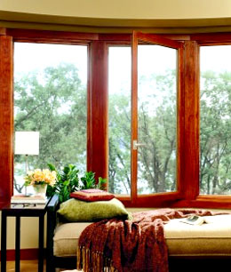

Почему окно должно быть деревянным?
Чтобы не заплутать среди обилия предложений, которыми пестрит нынешний рынок, принимая решение о замене отслуживших свое оконных конструкций, необходимо учитывать, что окна - одна из ключевых деталей интерьера. От того, остановите ли вы свой выбор на натуральном дереве, или приобретете пластиковую конструкцию, напрямую зависит как температура в помещении, так и общее ощущение комфорта и уюта, которое вы сумеете создать.
Какие же преимущества имеют деревянные окна?
В первую очередь следует отметить, что в отличие от пластиковых, деревянные окна имеют более низкую теплопроводность, то есть медленнее выпускают тепло, что обеспечивает поддержание стабильной и наиболее комфортной температуры в помещении.
Вторым очевидным преимуществом деревянных окон является то, что как бы далеко не продвинулись современные технологии изготовления пластика, и какой бы уровень экологической безопасности нам ни обещали, натуральный материал в процессе эксплуатации, даже с учетом лакокрасочных материалов используемых в производстве, выделяет гораздо меньше вредных для человеческого организма веществ.
Из предыдущего пункта логично вытекает еще одно важнейшее отличие дерева от пластика - способность натурального материала «дышать», вследствие чего воздух в помещении, оборудованном деревянными окнами, не застаивается, что помогает создать наиболее подходящий для людей и комнатных растений микроклимат без использования искусственных увлажнителей воздуха.
Ну и еще одно преимущество дерева, на которое стоит обратить внимание при выборе между деревянными и пластиковыми окнами: возможность устранения повреждений. Любая царапина или скол на окне из дерева легко устраняется, а покрытие можно обновлять бессчетное количество раз, что автоматически повышает срок службы окна из натурального дерева.
Если к вышеизложенному добавить тот факт, что деревянные окна гораздо предпочтительнее с эстетической точки зрения, хорошо сочетаются с мебелью, а также внутренней и наружной отделкой помещения, то выбор в их пользу становится однозначным!
Компания «Окна Формат» более пяти лет занимается производством, реализацией и монтажом оконных конструкций любой сложности. Обратитесь к нам и опытные консультанты помогут вам максимально быстро и правильно произвести замеры, а также выбрать дизайн и расцветку вашего будущего окна, а низкие цены на нашу продукцию приятно удивят даже самого взыскательного клиента.